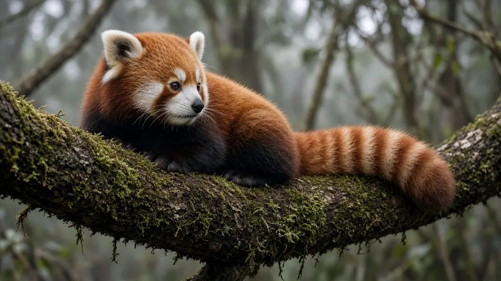
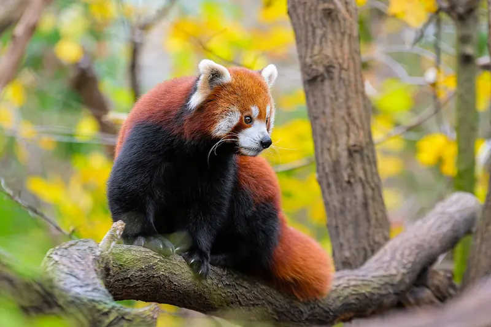

How do red pandas climb down trees headfirst?

Red pandas climb down tree trunks headfirst, something few animals their size can do. Smithsonian's National Zoo explains that their ankles are extremely flexible, and San Diego Zoo Wildlife Alliance notes that they grip the trunk with their hind claws on the way down. A long bushy tail keeps them balanced.
Why coming down headfirst is hard
Most climbing mammals find going up easy and coming down awkward. Claws hook into bark when an animal pulls itself upward, but on the way down, facing the ground, the front claws point the wrong way to hold on. Many animals therefore back down a trunk tail first, or simply jump.

Flexible ankles do the work
Red pandas solve the problem with their hind legs. According to Smithsonian's National Zoo, the red panda's ankles are extremely flexible, and the two lower leg bones, the tibia and fibula, are joined in a way that lets the fibula rotate about its own axis. That lets the hind feet turn so their claws face up the trunk while the animal faces down. San Diego Zoo Wildlife Alliance describes the result: to descend, red pandas climb down headfirst, gripping the trunk with the hind claws.
Other climbing tools
- Claws. Red pandas have five widely separated toes with sharp, semi retractable claws (Smithsonian's National Zoo).
- Furry soles. Adult red pandas have hair covering the soles of their feet, which helps them grip wet, slippery branches and walk on icy rocks (San Diego Zoo Wildlife Alliance).
- A balancing tail. The ringed tail can be almost as long as the body and helps a red panda keep its balance in the trees. It also wraps around the body for warmth, as explained in how red pandas stay warm.
What red pandas use trees for
Trees are shelter, lookout and escape route. Red pandas climb to escape predators such as leopards, rest stretched out on branches, curl up in tree hollows, and sunbathe in the branches on winter days (Smithsonian's National Zoo; San Diego Zoo Wildlife Alliance). Mothers also use hollow trees as birthing dens. Even so, much of their food, mainly bamboo leaf tips, is found low down, so red pandas move between the ground and the canopy throughout their active hours at dawn and dusk (see are red pandas nocturnal?).
Why this matters for conservation
Because red pandas depend on trees as well as bamboo, they need forests with an intact canopy, fallen logs and stumps, not just patches of bamboo. The IUCN Red List lists the red panda as Endangered (2015 assessment), with habitat loss and fragmentation among the main threats. Our red panda guide covers the species in full.
Key takeaways
- Red pandas climb down tree trunks headfirst.
- Extremely flexible ankles, with a fibula that can rotate, let the hind claws grip on the way down.
- Semi retractable claws, furry soles and a long balancing tail make them agile in the trees.
- They use trees for shelter, safety, rest and winter sunbathing.
Frequently asked questions
Can red pandas climb down trees headfirst?
Yes. San Diego Zoo Wildlife Alliance notes that red pandas descend headfirst, gripping the trunk with their hind claws, and Smithsonian's National Zoo credits their extremely flexible ankles.
Why are red pandas such good climbers?
Flexible ankles, sharp semi retractable claws, fur covered soles that grip wet branches, and a long bushy tail for balance all help (Smithsonian's National Zoo; San Diego Zoo Wildlife Alliance).
Do red pandas live in trees?
They spend much of their time in trees, using them for shelter, to escape predators and to sunbathe in winter, though they also forage on the ground and prefer forests with fallen logs and stumps.
Do giant pandas climb trees too?
Yes, giant pandas can climb, especially young ones, but red pandas are the more agile tree dwellers. See our giant vs red panda comparison.
Sources
Cite this page
APA
PandasWise. (2026, November 6). How do red pandas climb down trees headfirst? https://pandaswise.com/blog/how-do-red-pandas-climb-down-trees.html
MLA
"How do red pandas climb down trees headfirst?" PandasWise, 6 Nov. 2026, https://pandaswise.com/blog/how-do-red-pandas-climb-down-trees.html.
Chicago
PandasWise. "How do red pandas climb down trees headfirst?" PandasWise. November 6, 2026. https://pandaswise.com/blog/how-do-red-pandas-climb-down-trees.html.